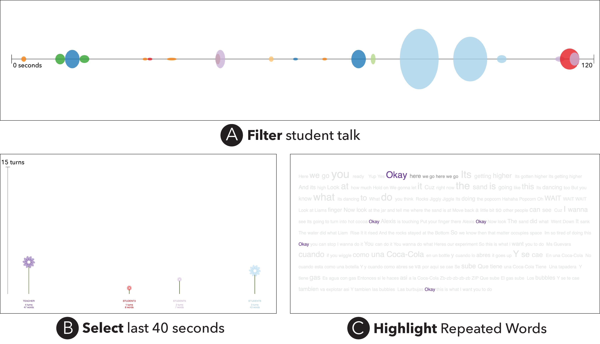

Figure 2. Transcript Explorer screenshots showing example interaction types for each visualization technique. (A) Filtering only student talk in the Turn Chart, (B) Selecting the last 40 seconds of interaction in the Distribution Diagram, and (C) Highlighting occurrences of the word “okay” in the Contribution Cloud.
